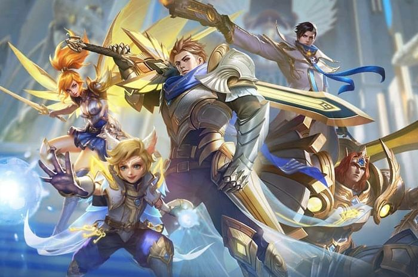
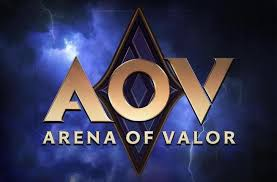
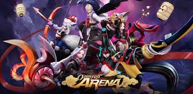
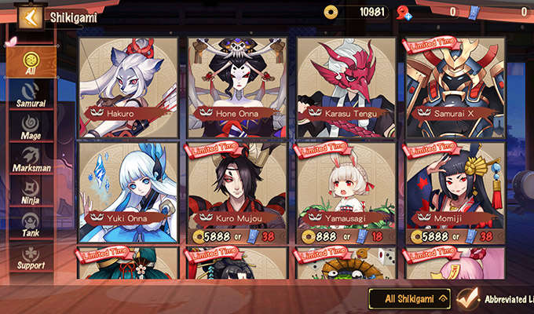

Apa itu Mobile Legends?
- - Mobile Legends adalah game yang dikembangkan dan dirilis oleh Moontoon developer.
- - Game ini dapat dimainkan di platform mobile Android dan iOS. Game MOBA satu ini sukses mencuri perhatian para gamer di Indonesia sejak tahun 2016.
- - Permainan ini dimainkan sebanyak 10 orang yang terbagi menjadi 2 tim.
- - Permainan dimulai dengan setiap pemain memilih 1 hero dari daftar hero yang bisa diakses oleh pemain. Hero yang tersedia adalah hero yang telah dibeli dan hero yang sedang ‘dipinjamkan’ secara gratis kepada pemain oleh sistem. Dengan kata lain, tidak semua hero dapat langsung dimainkan.
- - Lama permainan berkisar sekitar 15-20 menit untuk 1 ronde.

Tujuan Permainan
- - Tujuan utama permainan adalah untuk menghancurkan base lawan.
- -Terdapat 3 lane utama dalam map, yaitu middle, top, dan bottom lane.
- - Masing-masing lane dijaga oleh Turret yang akan menyerang unit musuh secara otomatis.
- - Setiap lane juga memiliki bangunan ‘Turret’ yang jika dihancurkan akan membuat creep/minion lawan menjadi semakin kuat.
- - Apabila semua ‘Turret‘ hancur, maka tim lawan akan memiliki super minion yang jauh lebih kuat dibanding minion biasa.
- - Di luar jalur lane setiap tim, juga terdapat jungle yang berisi jungle creep yang akan memberikan buff pada unit yang mengalahkan creep tersebut.
- - Permainan berakhir ketika base salah satu tim hancur.
Source Article: esportnesia.com

Sekilas tentang AOV
Tujuan akhir dari semua game kompetitif adalah untuk memenangkan ronde tersebut, sekaligus menikmati pengalaman bermain yang menyenangkan. Untuk memenangkan pertandingan di Arena of Valor, player harus menghancurkan semua tower hingga crystal musuh. Di sini kita tidak bisa bermain sendirian. Mengalahkan hero musuh sebanyak mungkin bukanlah tujuan utama dari gim ini. Diperlukan kerja sama tim untuk menghancurkan kristal musuh. Tidak peduli berapa kill to death ratio yang kita dapatkan, selama crystal kita dihancurkan musuh, kita tetap dihitung kalah juga.
Source Article: esportnesia.com

Source Image: play.google.com
MOBA (mutliplayer online battle arena) merupakan salah satu genre game yang memiliki banyak penggemarnya. Seperti yang kita ketahui, genre ini awalnya hadir pada platform PC dengan judul-judul seperti DOTA2, League Of Legends, Heroes Of Newerth, dll. Namun, seiring dengan perkembangan waktu genre ini akhirnya masuk ke ranah mobile dan popularitasnya cukup meledak seperti Mobile Legends, Vain Glory, Arena of Valor, dan masih banyak lagi.
Mungkin di antara Anda ada yang bosan dengan grafik serta tema yang begitu-gitu saja. Atau adakah di antara Anda yang menyukai jejepangan tapi ingin bermain MOBA? Maka, Onmyoji Arena menjadi solusinya. Onmyoji Arena ini adalah game mobile MOBA 5v5 dan merupakan spin off dari salah satu game turn-based strategy bertemakan Jepang besutan NetEase. Apakah Anda sudah penasaran? Mari kita intip di ulasan kali ini.
Beda dari yang Lain
Game Onmyoji Arena mengambil latar pada periode Heian, di mana Abe no Seimei harus berhadapan dengan dirinya yang lain (Dark Seimei). Di sini Seimei harus mengerahkan Shikigami-nya untuk melawan para Yokai yang dipimpin oleh Dark Seimei. Nah, Yokai maupun Shikigami inilah yang nantinya akan menjadi hero yang dapat Anda mainkan. Beberaa di antaranya ada Ibaraki Doji, Shuten Doji, Hakuro, Ebisu, dan masih banyak lagi. Bahkan ada beberapa hero yang berasal dari seri anime legendaris Inuyasha, seperti Inuyasha, Kikyo, dan Sesshomaru. Anda juga akan dimanjakan oleh desain karakter yang ada pada Onmyoji Arena ini. Dengan desain karakter 3D bergaya anime akan membuat kalian betah dalam memainkan MOBA ini.

Grafik memukau dengan Seiyuu yang beragam
Salah satu keunggulan Onmyoji Arena dibandingkan dengan game-game MOBA lainnya ada pada segi grafisnya. Mata Anda akan dimanjakan dengan kualitas visual yang begitu cantik serta hidup. Bahkan secara visual game ini kaya akan perpaduan warna yang sangat serasi dan pas. Walaupun Onmyoji Arena dilengkapi dengan grafis yang baik, dapat dikatakan bahwa game ini tidak akan membebani smartphone Anda. Cukup dengan smartphone dengan spesifikasi mid-end Anda dapat memainkan game ini dengan mulus.
Selain desain karakter pada game ini yang memiliki kualitas cukup baik dengan gaya ala anime. Setiap karakternya juga dilengkapi oleh jajaran seiyuu yang beragam. Anda dapat memilih versi bahasa audio antara Tiongkok, Jepang, maupun Inggris, sehingga Anda semakin betah dalam memainkan game-nya.
Didukung oleh grafis yang baik, Onmyoji Arena juga melengkapinya dengan berbagai macam skin yang tentunya mempercantik hero yang Anda mainkan. Terlebih ada beberapa skin yang nantinya dapat kalian peroleh via battle coin maupun quest.
Source Article: kaorinusantara.com